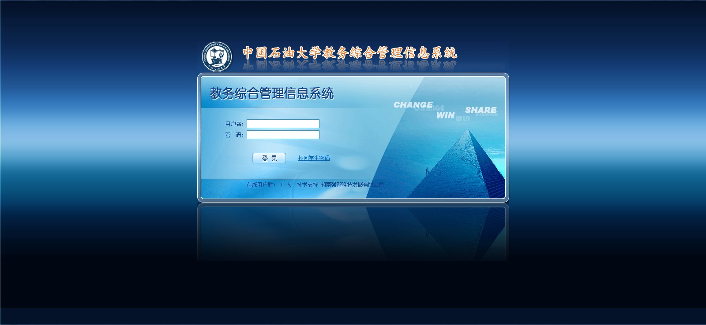
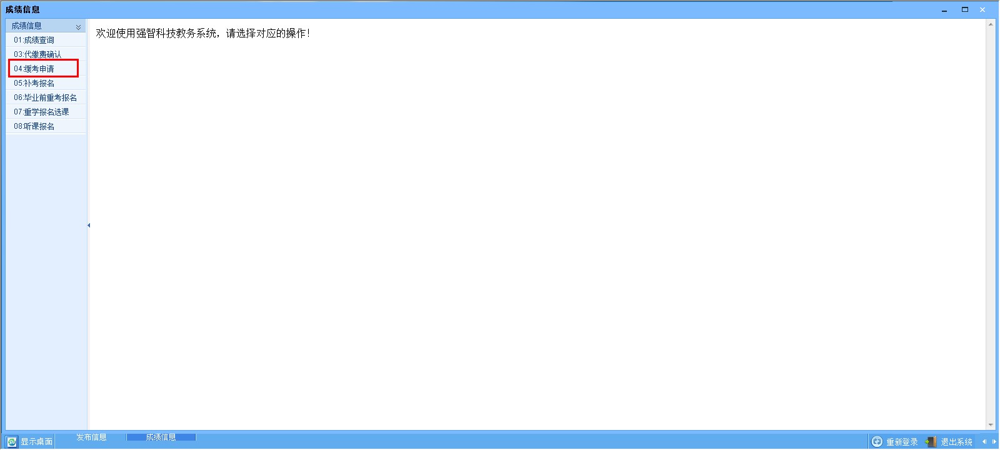
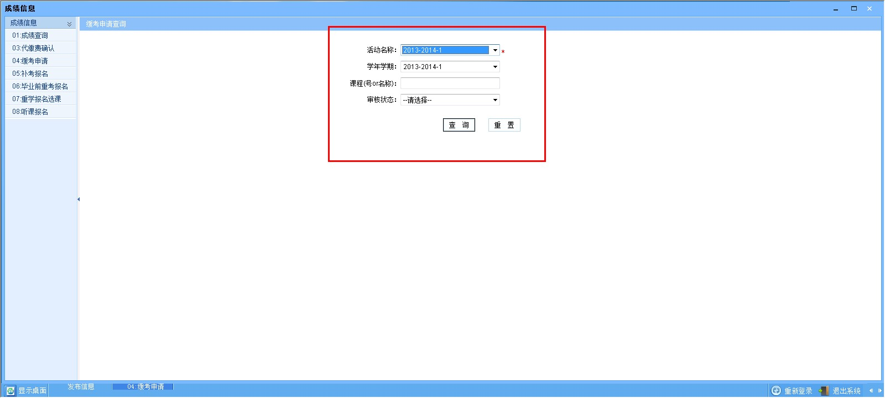
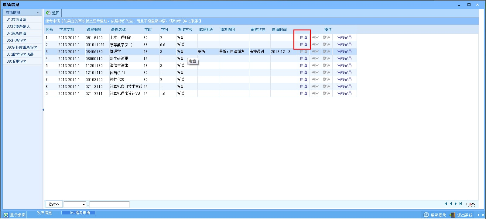
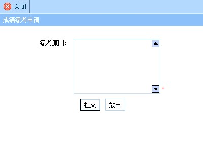
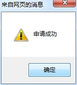
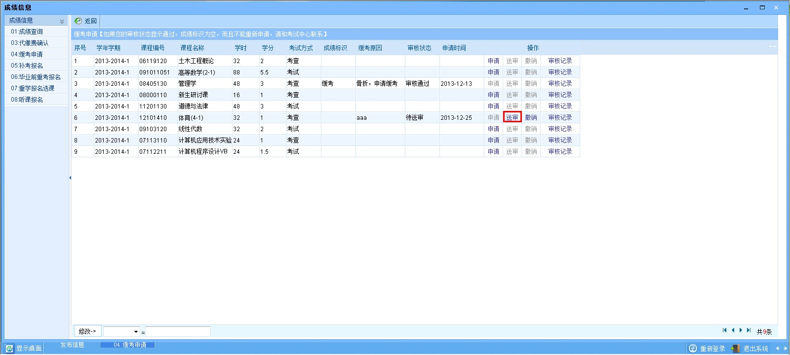
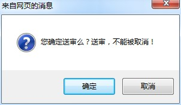
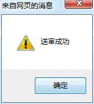

学生重学报名流程图
系统提示：
关于浏览器兼容的解决办法，如果你使用的电脑是win7或者IE浏览器版本超过IE8，请进入教务系统后按F12，浏览器模式选择IE8。
登录教务系统。如下图。

选择“成绩信息”。 如下图。

选择“04：缓考申请”。 如下图。

选择“活动名称”和“学年学期”，一般选择当前学期其他项无需选择，直接选择“查询”。
根据查询结果，选择需要办理缓考的科目，选择“申请”，并确认是否需要申请。

确认申请缓考后，输入“缓考原因”，点击提交。

提交成功后，如下图。

注意：未进行下一步（第6条）之前，可以撤销缓考申请。务必进行下一步。
确认该门课程缓考并且申请理由无误的情况下，请选择“送审”。

送审后，会弹出对话框提示。如下图。

确定无误后，表示缓考网上申请成功！因此，务必送审！如下图。
